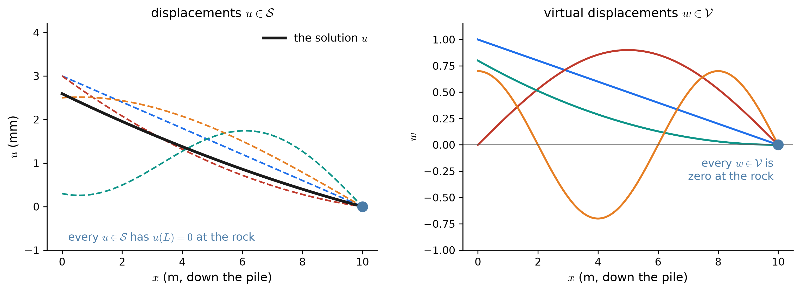
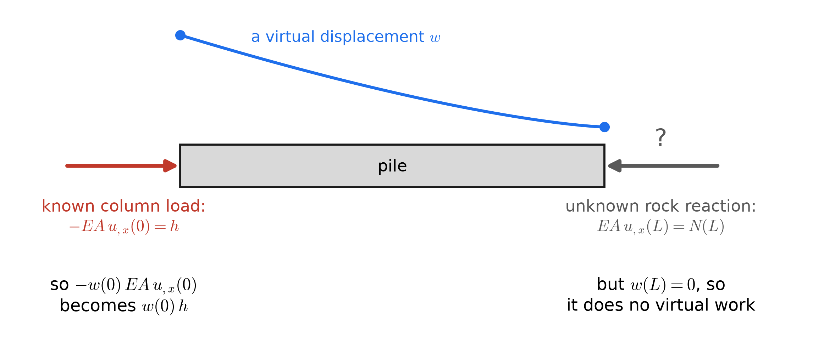
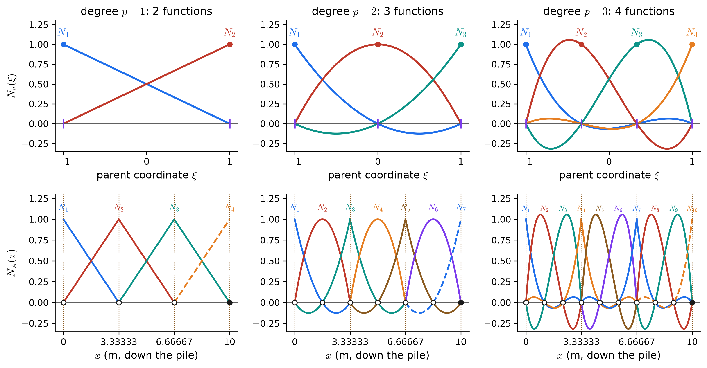
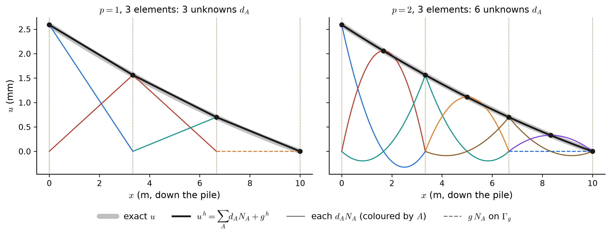
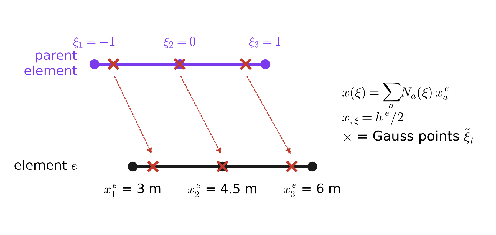
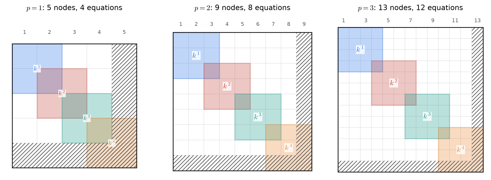
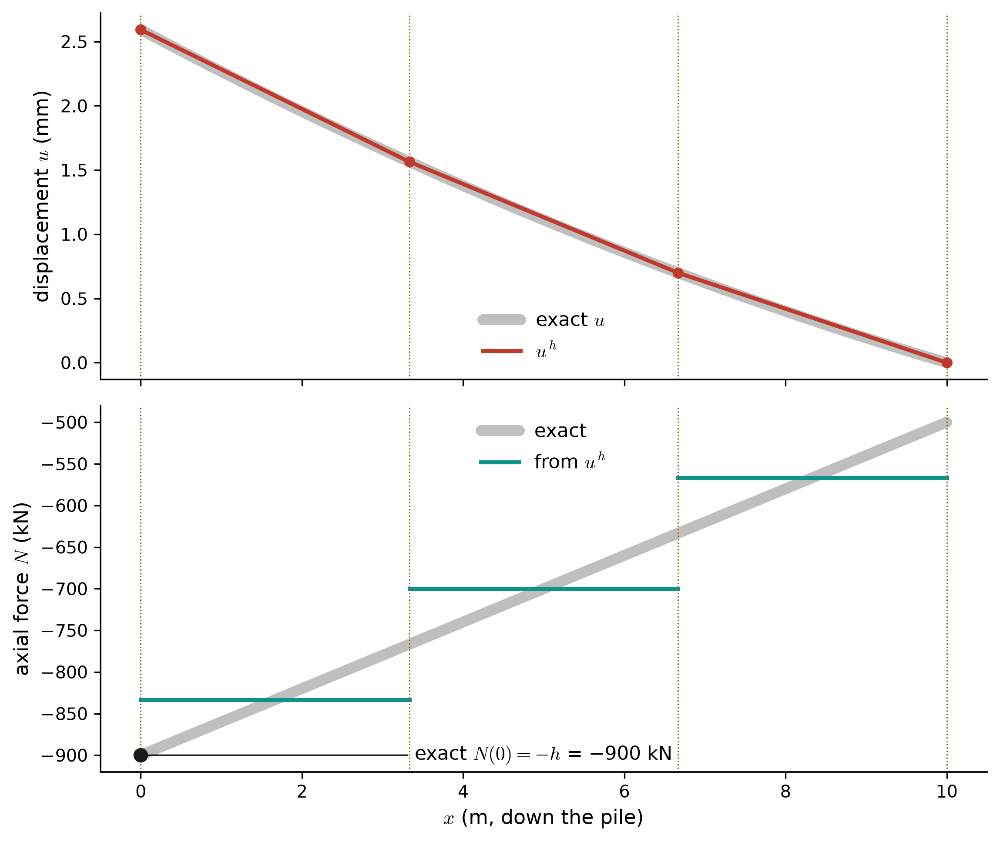
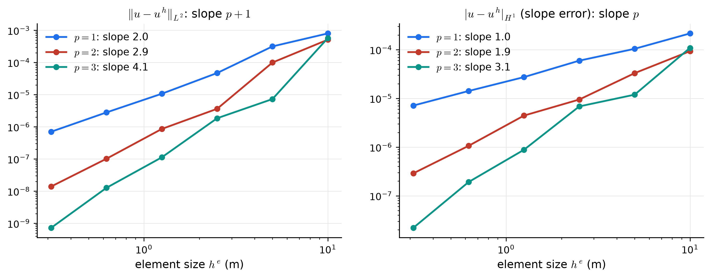

Appendix E — 1D Poisson IV: The Rod, by Galerkin’s Method
The strong-form page set up an end-bearing pile as Hughes’ model problem. This page solves it approximately, step by step, exactly as the wall was solved. The mathematics is the same, so this page concentrates on what each step means mechanically. There, the weak form is the principle of virtual work.
\[ (\mathrm{S}) \;\Longleftrightarrow\; (\mathrm{W}) \;\xrightarrow{\;\text{finite-dimensional}\;}\; (\mathrm{G}) \;\xrightarrow{\;\text{basis functions}\;}\; \mathbf{K}\mathbf{d} = \mathbf{F} \;\xleftarrow{\;\text{assembly}\;}\; \mathbf{k}^e,\; \mathbf{f}^e \;\xrightarrow{\;\text{solve}\;}\; u^h \]
The running example is the pile, in Hughes’ arrangement (a), with \(x\) pointing down:
\[ (\mathrm{S}) \qquad \left(EA\,u_{,x}\right)_{,x} + f = 0 \;\text{ on } ]0, L[ \qquad u(L) = g \qquad -EA\,u_{,x}(0) = h \] \[ L = 10\ \text{m},\quad EA = 2.7\times10^{9}\ \text{N},\quad f = -40\ \text{kN/m},\quad h = +900\ \text{kN},\quad g = 0 \]
E.1 The weak form: virtual work
E.1.1 Displacements and virtual displacements
\[ \mathcal{S} = \left\{\, u \;\middle|\; u \in H^1(\Omega),\; u(L) = g \,\right\} \qquad\qquad \mathcal{V} = \left\{\, w \;\middle|\; w \in H^1(\Omega),\; w(L) = 0 \,\right\} \]

In structural mechanics \(w\) has a name and a meaning. It is a virtual displacement, a small motion you imagine imposing, consistent with the supports. Since the rock does not move, neither may \(w\) at \(x = L\).
E.1.2 Multiply, integrate, and integrate by parts
Multiply the equilibrium equation by \(w\) and integrate down the pile:
\[ 0 = \int_0^L w\left[\left(EA\,u_{,x}\right)_{,x} + f\right] dx \;\;\xrightarrow{\;\text{by parts}\;}\;\; \int_0^L w_{,x}\,EA\,u_{,x}\,dx = \int_0^L w f\,dx + w(L)\,EA\,u_{,x}(L) - w(0)\,EA\,u_{,x}(0) \]

\[ (\mathrm{W}) \qquad \underbrace{\int_0^L w_{,x}\,EA\,u_{,x}\,dx}_{a(w,\,u)\;=\;\text{internal virtual work}} \;=\; \underbrace{\int_0^L w\,f\,dx + w(0)\,h}_{(w,\,f)\,+\,w(0)h\;=\;\text{external virtual work}} \qquad \forall\, w \in \mathcal{V} \]
- Internal virtual work. \(w_{,x}\) is the virtual strain and \(EA\,u_{,x} = N\) is the real axial force, so \(a(w,u) = \int N\,\delta\varepsilon\,dx\).
- External virtual work. The distributed load moves through \(w\) along the pile; the column load moves through \(w(0)\) at the head.
- \((\mathrm{W})\) is the principle of virtual work: a displacement field that respects the supports is the equilibrium one exactly when internal and external virtual work agree for every admissible virtual displacement.
- Units: N·m (joules) times the units of \(w\) per meter of \(u\), on both sides.
| Arrangement | \(\mathcal{S}\) | \(\mathcal{V}\) | External virtual work |
|---|---|---|---|
| (a) Hughes: \(h\) at \(x=0\), \(g\) at \(x=L\) | \(u(L) = g\) | \(w(L) = 0\) | \((w, f) + w(0)\,h\) |
| (b) \(g\) at \(x=0\), \(h\) at \(x=L\) | \(u(0) = g\) | \(w(0) = 0\) | \((w, f) + w(L)\,h\) |
| (c) \(g\) at both ends | \(u(0) = g_0\), \(u(L) = g\) | \(w(0) = w(L) = 0\) | \((w, f)\) |
E.2 The Galerkin form
E.2.1 Elements, nodes, and Lagrange basis functions
The pile is cut into \(n_{el}\) elements with Lagrange polynomials of degree \(p\) on each, exactly as for the wall. There are \(n_{en} = p + 1\) nodes per element and \(n_{np} = p\,n_{el} + 1\) nodes in all, with node \(n_{np}\) at the rock.

E.2.2 The Galerkin form, \((\mathrm{G})\)
\[ w^h = \sum_{A=1}^{n} c_A\,N_A, \qquad u^h = v^h + g^h = \sum_{B=1}^{n} d_B\,N_B + g\,N_{n+1} \] \[ (\mathrm{G}) \qquad a(w^h, v^h) = (w^h, f) + w^h(0)\,h - a(w^h, g^h) \qquad \forall\, w^h \in \mathcal{V}^h \]
Here each \(d_B\) is the displacement of node \(B\), and each \(N_A\) is a virtual displacement pattern: move node \(A\) by one unit and leave every other node where it is. Galerkin’s method asks for virtual work to balance for each of these patterns, not for every conceivable one.

E.3 From \((\mathrm{G})\) to \(\mathbf{K}\mathbf{d} = \mathbf{F}\)
Substituting the expansions and using the linearity of \(a\) and \((\cdot,\cdot)\) in each slot:
\[ \sum_{A=1}^{n} c_A \left[\, \sum_{B=1}^{n} a(N_A, N_B)\,d_B - (N_A, f) - N_A(0)\,h + a(N_A, N_{n+1})\,g \right] = 0 \qquad \text{for all } c_A \] \[ \boxed{\;\mathbf{K}\,\mathbf{d} = \mathbf{F}\;} \qquad K_{AB} = \int_0^L N_{A,x}\,EA\,N_{B,x}\,dx \qquad F_A = \int_0^L N_A\,f\,dx + \delta_{A1}\,h - \int_0^L N_{A,x}\,EA\,N_{n+1,x}\,dx\;g \]
- \(\mathbf{K}\) is the stiffness matrix, N/m: \(K_{AB}\) is the force at node \(A\) needed to hold the pile in the shape “node \(B\) moved by one meter, every other node fixed”.
- \(\mathbf{F}\) is the vector of equivalent nodal forces, N. \((N_A, f)\) is the share of the skin friction that node \(A\) carries, and the column load goes to node 1 only.
- Symmetric (Maxwell–Betti reciprocity), banded, and positive definite because the rock holds the pile. With both ends free, arrangement (d), a rigid-body translation \(\mathbf{d} = \{1, 1, \dots, 1\}\) gives \(\mathbf{K}\mathbf{d} = 0\), so \(\mathbf{K}\) is singular: the floating pile, in matrix form.
E.4 The element point of view
\[ k^e_{ab} = \int_{\Omega^e} N_{a,x}\,EA\,N_{b,x}\,dx = \int_{-1}^{1} N_{a,\xi}\,EA\,N_{b,\xi}\,\frac{2}{h^e}\,d\xi \qquad\qquad f^e_a = \int_{\Omega^e} N_a\,f\,dx + \delta_{e1}\,\delta_{a1}\,h - \sum_b k^e_{ab}\,g^e_b \]

For constant \(EA\) and \(f\), these are the familiar bar elements:
\[ p = 1:\;\; \mathbf{k}^e = \frac{EA}{h^e}\begin{bmatrix} 1 & -1 \\ -1 & 1 \end{bmatrix},\;\; \mathbf{f}^e_{\text{body}} = \frac{f\,h^e}{2}\begin{Bmatrix} 1 \\ 1 \end{Bmatrix} \qquad\quad p = 2:\;\; \mathbf{k}^e = \frac{EA}{3h^e}\begin{bmatrix} 7 & -8 & 1 \\ -8 & 16 & -8 \\ 1 & -8 & 7 \end{bmatrix},\;\; \mathbf{f}^e_{\text{body}} = \frac{f\,h^e}{6}\begin{Bmatrix} 1 \\ 4 \\ 1 \end{Bmatrix} \] \[ p = 3:\;\; \mathbf{k}^e = \frac{EA}{40h^e}\begin{bmatrix} 148 & -189 & 54 & -13 \\ -189 & 432 & -297 & 54 \\ 54 & -297 & 432 & -189 \\ -13 & 54 & -189 & 148 \end{bmatrix},\;\; \mathbf{f}^e_{\text{body}} = \frac{f\,h^e}{8}\begin{Bmatrix} 1 \\ 3 \\ 3 \\ 1 \end{Bmatrix} \]
- \(p = 1\) is the spring \(k = EA/h^e\) from mechanics of materials: the linear element is an axial spring.
- Each row of \(\mathbf{k}^e\) sums to zero, because a rigid translation of the element needs no force.
- The body terms add up to \(f\,h^e\), the element’s total friction, shared among its nodes.
E.4.1 Assembly with ID, IEN, and LM
The arrays and the assembly operator are identical to the wall’s (see the wall page for the table). \(k^e_{ab}\) is added into \(K_{PQ}\) with \(P = \mathrm{LM}(a,e)\) and \(Q = \mathrm{LM}(b,e)\), and anything with a zero index is skipped:
\[ \mathbf{K} = \mathop{\Large\mathsf{A}}_{e=1}^{n_{el}}\left(\mathbf{k}^e\right), \qquad \mathbf{F} = \mathop{\Large\mathsf{A}}_{e=1}^{n_{el}}\left(\mathbf{f}^e\right), \qquad \mathrm{LM}(a,e) = \mathrm{ID}\big(\mathrm{IEN}(a,e)\big) \]

E.5 Worked example: the pile on three linear elements
Three elements, \(h^e = 10/3\) m, nodes at depths 0, 3.33, 6.67, 10 m, and node 4 on the rock. The ID, IEN, and LM arrays are exactly those of the wall example: \(\mathrm{ID} = \{1, 2, 3, 0\}\), and \(\mathrm{LM}(\cdot, 3) = \{3, 0\}\). Each element has \(EA/h^e = 8.1\times10^{8}\) N/m and \(f h^e/2 = -66.67\) kN:
\[ \mathbf{k}^1 = \mathbf{k}^2 = \mathbf{k}^3 = 10^{8}\times\begin{bmatrix}8.1 & -8.1 \\ -8.1 & 8.1\end{bmatrix}\ \tfrac{\text{N}}{\text{m}} \] \[ \mathbf{f}^1 = \begin{Bmatrix}-66.67 \\ -66.67\end{Bmatrix} + \underbrace{\begin{Bmatrix}900.00 \\ 0\end{Bmatrix}}_{h\ \text{at the head}} = \begin{Bmatrix}833.33 \\ -66.67\end{Bmatrix} \qquad \mathbf{f}^2 = \begin{Bmatrix}-66.67 \\ -66.67\end{Bmatrix} \qquad \mathbf{f}^3 = \begin{Bmatrix}-66.67 \\ -66.67\end{Bmatrix} - \underbrace{\mathbf{k}^3\begin{Bmatrix} 0 \\ 0 \end{Bmatrix}}_{g\,=\,0} = \begin{Bmatrix}-66.67 \\ -66.67\end{Bmatrix} \quad [\text{kN}] \]
\[ \underbrace{10^{8}\times\begin{bmatrix}8.1 & -8.1 & 0 \\ -8.1 & 16.2 & -8.1 \\ 0 & -8.1 & 16.2\end{bmatrix}}_{\mathbf{K}\ [\text{N/m}]} \begin{Bmatrix} d_1 \\ d_2 \\ d_3 \end{Bmatrix} = \underbrace{10^{3}\times\begin{Bmatrix}833.33 \\ -133.33 \\ -133.33\end{Bmatrix}}_{\mathbf{F}\ [\text{N}]} \qquad\Longrightarrow\qquad \mathbf{d} = \begin{Bmatrix}2.5926 \\ 1.5638 \\ 0.6996\end{Bmatrix}\ \text{mm} \]

- The nodal displacements are exact: the exact solution at the three unknown nodes is 2.5926, 1.5638, 0.6996 mm. Linear elements with constant \(EA\) are nodally exact in one dimension.
- The force at the head is only weakly right. On element 1, \(N^h\) = −833.3 kN, not \(-h\) = −900 kN; it is the average compression over the top 3.33 m. Refining the mesh brings it to −900 kN.
- The discarded equation is the rock reaction. Row 4 of the full system, \(\sum_b k^3_{2b} U^3_b - f^3_{\text{body},2}\), is the boundary term \(N(L)\) that \(w(L) = 0\) removed. It evaluates to −500.0 kN, the exact force delivered to the rock. Differentiating \(u^h\) on element 3 gives −566.7 kN. This is how structural codes report support reactions.
- With \(p = 2\), a single element is exact, because the true displacement is quadratic (Figure E.4).
E.6 How the error shrinks
Uniform friction makes the answer a quadratic, which \(p \ge 2\) reproduces exactly. So give the soil a stiff layer instead: a band of extra friction around 6 m depth, \(f = -40 - 150\,e^{-((x - 6)/0.6)^2}\) kN/m. Its exact solution is not a polynomial:

\[ \|u - u^h\|_{L^2} \le C\,h^{p+1} \qquad\qquad |u - u^h|_{H^1} = \left(\int_0^L \left(\varepsilon - \varepsilon^h\right)^2 dx\right)^{1/2} \le C\,h^{p} \]
E.7 Explore the Galerkin method
Choose the data and the discretization, then look through the tabs. Solution redraws the pile before and after loading, now with \(u^h\). Force compares \(N^h\) with the exact axial force. Error and Convergence measure the difference. Basis and Matrices show how the system is built. With 15 or more unknowns, only the first rows and columns of \(\mathbf{K}\) are printed, plus a zoom around the highlighted element.
The problem
The discretization
- \(p = 1\), 3 elements is the worked example above. Open Force and compare the stepped \(N^h\) with the exact line. The reaction printed underneath is exact even so.
- Choose the stiff layer and a custom mesh that clusters vertices around 6 m (the default custom list does). Compare the error with a uniform mesh with the same number of elements.
- Switch to arrangement (b) with \(h\) = +900 kN: the load now pulls the far end, and the band turns red (tension).
- On Matrices, step through the elements. Every \(\mathbf{k}^e\) of a \(p = 1\) element is the spring \(\frac{EA}{h^e}\begin{bmatrix} 1 & -1 \\ -1 & 1\end{bmatrix}\), and the global \(\mathbf{K}\) is those springs connected end to end.